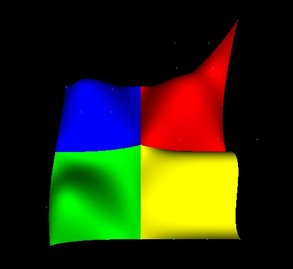
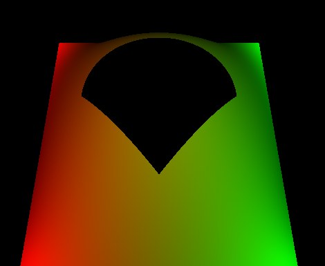

A NURBS surface is a grid of control points with a knot vector along each
parametric direction: a smooth shape described by a handful of numbers rather
than by thousands of triangles. NurbsSurface holds one,
TrimmedSurface cuts pieces out of one, and NurbsCurve
is the one-dimensional case.
Each is evaluated into an indexed triangle mesh by opengl_extrusions, a NumPy geometry generator with no OpenGL in it, and the mesh is what gets drawn: core profile and compatibility profile alike, lit, shadowed, textured and pickable. Evaluation touches no GL at all, so a surface can be built before there is a context to draw it in — on a worker thread while a scene loads, or in a test with no window.

NurbsSurface patches meeting in a mound, from
tests/molehill.py. Each is a 4 by 4 control net; the shading is
from the surfaces' own derivatives, so the seams between them are smooth.| Node | What it is |
|---|---|
NurbsSurface |
a control net, a knot vector each way, and optionally a weight and a colour per control point |
TrimmedSurface |
a surface plus the trimmingContour loops that
bound the part of it to keep |
NurbsCurve |
a curve in space, drawn as a line strip |
Contour2D |
one closed trimming loop, built from joined children |
Polyline2D |
a straight-sided piece of a loop |
NurbsCurve2D |
a curved piece of a loop, in the surface's parameter square |
NurbsToleranceSample,NurbsDomainDistanceSample |
how finely a surface is sampled — see below |
The Teapot is built the same way: its 32 Bezier patches are NURBS surfaces of order 4.
from OpenGLContext.scenegraph.basenodes import *
KNOT = [0, 0, 0, 0, 1, 1, 1, 1] # clamped cubic, 4 points
surface = NurbsSurface(
uDimension=4, vDimension=4,
uKnot=KNOT, vKnot=KNOT,
controlPoint=[[x, y, 1.0 if 0 < x < 3 and 0 < y < 3 else 0.0]
for y in range(4) for x in range(4)],
)
scene = sceneGraph(children=[Shape(geometry=surface,
appearance=Appearance(material=Material()))])
A knot vector holds dimension + degree + 1 non-decreasing
values, which is where the degree comes from: a 4-point direction with 8 knots
is cubic. controlPoint is v-major — u varies
fastest, as the VRML97 NURBS proposal specifies.
The weight field takes one positive number per control point.
Weights are what let a NURBS circle be a circle rather than an approximation of
one: a quarter circle is exact as a rational quadratic with the middle weight at
√2/2, and inexact as any polynomial. Equal weights give the same surface
as none, so a scene that sets no weights is unaffected.
root = 2 ** 0.5 / 2
cylinder = NurbsSurface(
uDimension=9, vDimension=2,
uKnot=[0, 0, 0, .25, .25, .5, .5, .75, .75, 1, 1, 1],
vKnot=[0, 0, 1, 1], # degree 1: straight up
controlPoint=ring_points, # 9 around, twice
weight=[1, root, 1, root, 1, root, 1, root, 1] * 2,
)
A direction may be degree 1, as the cylinder's length is here: a surface that runs straight between two rows of control points is evaluated and shaded like any other.
A sampling node states a rate: sample intervals per unit of the surface's knot range. A rate rather than a count, so two surfaces sampled at the same rate get triangles of the same size whatever their knots run over — a surface whose knots go 0 to 4 is sampled four times as often as one whose knots go 0 to 1.
| Node | Field | Meaning |
|---|---|---|
NurbsDomainDistanceSample |
uStep, vStep (default 100) |
the rate itself, one for each direction |
NurbsToleranceSample |
tolerance (default 50) |
a rate of 150/tolerance, held between 20 and 100 |
A surface that names no sampling node gets a tolerance of 5,
which is a rate of 30: a surface over the usual 0..1 knots comes out as a 30 by
30 lattice, 1800 triangles. Its method and parametric
fields are carried for scenes that set them; a tolerance is a distance on a
surface nobody has drawn yet, so it asks for a finer mesh without promising a
deviation. Where a scene wants a mesh of a stated size,
NurbsDomainDistanceSample states it.
One direction is capped at 512 intervals, which is where an unusual knot range stops asking for more mesh than any rate intended.
A surface far from the camera is tessellated at a coarser rate and cached
separately, so walking towards one rebuilds it once per level rather than every
frame — the same
distance
metric the teapot and the quadrics use. Level 0 keeps the node's own
sampling, so a close-up surface looks exactly as it was authored; the coarser
levels use rates of 16, 8 and 4. Set OPENGLCONTEXT_LOD=off for
deterministic output.
A trimming contour is a closed loop drawn in the surface's parameter square. What lies to a loop's left is kept, so a counter-clockwise loop is a boundary, a clockwise loop inside it is a hole, and a clockwise loop on its own encloses nothing at all.
outer = Contour2D(children=[Polyline2D(point=[[0, 0], [1, 0], [1, 1], [0, 1]])])
hole = Contour2D(children=[
NurbsCurve2D(knot=KNOT,
controlPoint=[[.25, .5], [.25, .75], [.75, .75], [.75, .5]]),
Polyline2D(point=[[.75, .5], [.5, .25], [.25, .5]]),
])
trimmed = TrimmedSurface(surface=surface, trimmingContour=[outer, hole])

TrimmedSurface, from
tests/nurbsobject.py: a counter-clockwise square boundary and a
clockwise loop inside it, whose top is a NurbsCurve2D and whose
point is a Polyline2D. The colours are per control point.A Contour2D's children join end to end into one loop: where one
ends on the point the next begins with, the point is kept once, and the loop
closes from its last point back to its first. A NurbsCurve2D is
evaluated at 32 points unless its tessellation field says
otherwise.
The kept region is triangulated by the same constrained Delaunay tessellator the swept geometry's caps use, refined to the triangle size the sampling rate asks for — so a trimmed surface is sampled as finely across its middle as an untrimmed one, not only where its outline has vertices. The surface is then evaluated at the vertices that come out, which is why a trim follows the surface's curvature rather than cutting a flat hole in it.
Trim coordinates are in the surface's own knot ranges, in the order
(v, u).
A surface's normal is ∂p/∂v × ∂p/∂u,
and its triangles wind to match. A surface that comes out facing away from the
camera has its two parametric directions the other way round: swap
uDimension with vDimension and the knot vectors with
them, or set solid=0 to stop the back faces being culled.
ccw=0 reverses the winding the fixed-function pipeline treats as
front-facing.
geometryType takes polygon (the default),
or edge / patch, which draw the tessellation as
its edges.
The color field takes one colour per control point. It is
evaluated through the same basis as the surface, so a colour follows its control
point across the tessellation however finely it is sampled, and the surface
draws through the vertex-colour program with the material supplying everything
but the diffuse term.
| Module | What is in it |
|---|---|
scenegraph/nurbs.py |
the geometry nodes and both draw paths |
scenegraph/nurbstess.py |
a surface node to triangles; no GL |
scenegraph/nurbstrim.py |
the trimming primitives |
scenegraph/nurbssampling.py |
the sampling nodes |
scenegraph/teapot_nurbs.py |
the Utah Teapot's 32 patches |
Demonstrations: tests/molehill.py (four surfaces meeting),
tests/molehill_edit.py (dragging their control points),
tests/nurbsobject.py (a trimmed surface, animated) and
tests/teapot_nurbs.py.